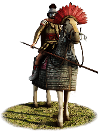
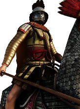

RTR: Imperium Surrectum
RTR: Imperium SurrectumBactrian Cataphracts


Class: heavy · Category: cavalry · Men per unit: 30
Reforms: Unlocked by Baktrian Reforms
Description
The Bactrian Cataphracts are the heaviest cavalry in the Bactrian armies. The riders, as well as their horses, are protected by thick layers of armour made of textile, bronze and steel scales. As head protection, these men wear a combination of Bactrian, Konos, and Boeotian helmets, some even hiding their face behind an awe-inspiring face mask. Armed with long lances, they are best used as the hammer to crush foes of Bactria that have been engaged by allied infantry.
Historical background
While Cataphracts are traditionally thought of as armoured from head to toe, they did not start that way, but rather seem to have acquired their full suit of armour somewhere in the first century BC. According to Plutarch, as late as the Third Mithridatic War (73-63 BC), Roman soldiers were instructed to hit cataphracts in the knee and thigh, as it was the only place where they were vulnerable (Plut. Luc 28.2.4). Only fifteen years after that episode, the same tactic seems to have had less success, causing the Roman cavalry to try to attack the bellies of the Parthian horses at the battle of Carrhae (Plut. Crass. 25.4).
Our best sense of what the armour of a Bactrian Cataphract might have looked like is a full suit of armour, excavated by the French archaeological mission in Aï-Khanoum (Bulletin de l’ėcole francaise d’ Extreme-Oriente 68 (1980) pp. 60-63). The armour of Aï-Khanoum is made up of a combination of scale and lamellar pieces. It is likely that Hellenistic forces further to the west included more "Greek" armour pieces such as plated cuirasses in their cataphract kit (Sekunda, Seleucid Army (1994) p. 21).
The great weight of the armoured rider, as well as the horses’ armour, meant that only a few breeds of horses could be used as cataphract mounts. The Seleucids and later Parthians made frequent use of Nisean horses, a breed praised by Strabo as great cavalry horses (Str. 11.13.7) and already employed by the Achaemenid empire. A Bactrian ruler would probably look to the Ferghana Valley to find the horses to build his own cataphract corps. Its so-called ‘heavenly horses’ are attested in Chinese sources as well as in the description of the travels of Marco Polo, who believed them to be descendants of Alexander’s horse Bucephalus (Travels, Ch. 26). In the late second century BC, the Chinese Wudi emperor tried to acquire these horses, first through diplomatic means and, failing that, through a lengthy military campaign in the Gansu Corridor, the Ferghana Valley, and the surrounding regions (Watson, Records of the Grand Historian: Han Dynasty II (1993), pp. 234-250).
Stats
| Rank in roster | Rank in roster | Rank in roster | Rank in roster | ||||||||
|---|---|---|---|---|---|---|---|---|---|---|---|
| Men per unit | 30 | █········· 8% | Attack | 14 | ███████··· 72% | Charge bonus | 40 | ██████████ 99% | Defence | 38 | ███████··· 69% |
| · armour | 20 | ██████████ 99% | · defence skill | 18 | ████······ 38% | · shield | 0 | █········· 0% | Morale | 15 | █████████· 90% |
| Discipline | Normal | Training | Highly trained | Recruitment cost | 3,360 dn | █████████· 89% | Upkeep per turn | 1,353 dn | ██████████ 98% | ||
| Turns to recruit | 4 |
Weapons
| Primary | Secondary | Primary | Secondary | Primary | Secondary | Primary | Secondary | ||||
|---|---|---|---|---|---|---|---|---|---|---|---|
| Attack | 14 | 14 | Charge bonus | 40 | 30 | Type | melee · blade | melee · blade | Damage | piercing | slashing |
Defence
| Primary | Secondary | Primary | Secondary | Primary | Secondary | Primary | Secondary | ||||
|---|---|---|---|---|---|---|---|---|---|---|---|
| Total | 38 | — | Armour | 20 | — | Defence skill | 18 | — | Shield | 0 | — |
Condition and terrain
| Hit points | 1 | Mount | horse cataphract | Ground: scrub / sand / forest / snow | -7 / -1 / -8 / -1 | Charge distance | 40 |
| Formations | Square · Wedge |
Technical stats
| Time between blows (primary / secondary) | 2.5 s / 2.5 s | Extra fatigue in hot climates | 5 | Spacing between men: close / loose | 2 × 4.8 m / 3 × 7.2 m | Default ranks | 5 |
In battle: Very good stamina · Powerful charge
Who can recruit it
A core roster unit for one faction, which can raise it anywhere it holds the right building:
Exactly what a settlement must have, route by route (2)
| Building | Also requires | Building | Also requires | ||||
|---|---|---|---|---|---|---|---|
| Direct Rule | Tier 3 Military Industrial Complex · Baktrian Reforms · Tier 2 Colony · Requires horses resource, if not available locally you can build Fine Horse Exports to supply it | Homeland | Tier 2 Military Industrial Complex · Baktrian Reforms |